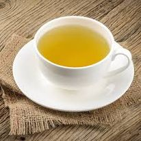
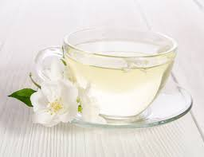
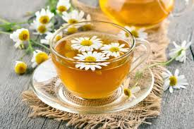
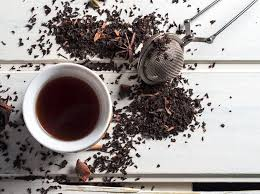
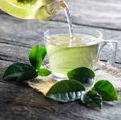

Yellow tea is the rarest type of tea. It is similarly processed to green tea, but is more slowly dried to make the leaves take on a yellow color.
White tea is the mildest form of tea because it is the least processed, and mild in taste and colour.
Herbal tea is a very broad category that includes chamomile, peppermint, rooibos, and ginger teas.
Black Tea. Black teas, called “red teas” in China because of the colour of their infusion, are teas whose leaves have been completely oxidized.
Green Tea. Green tea is made from the same leaves as black tea, except they don't undergo the oxidation process